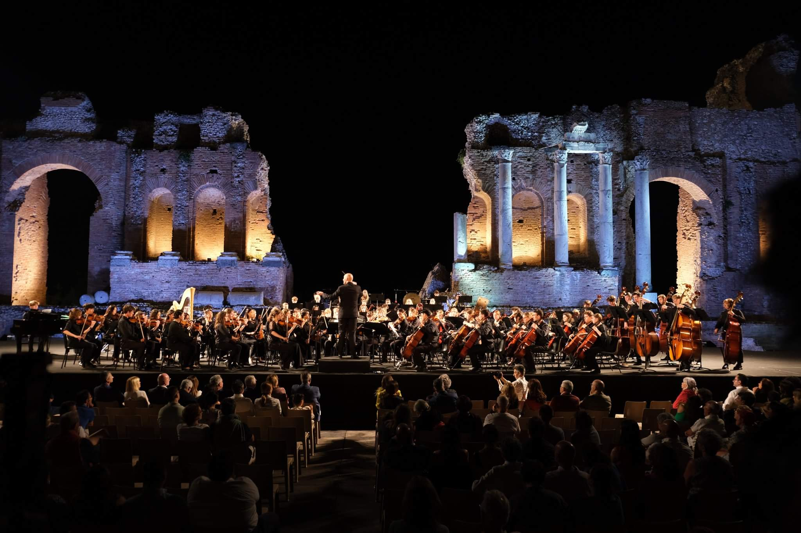
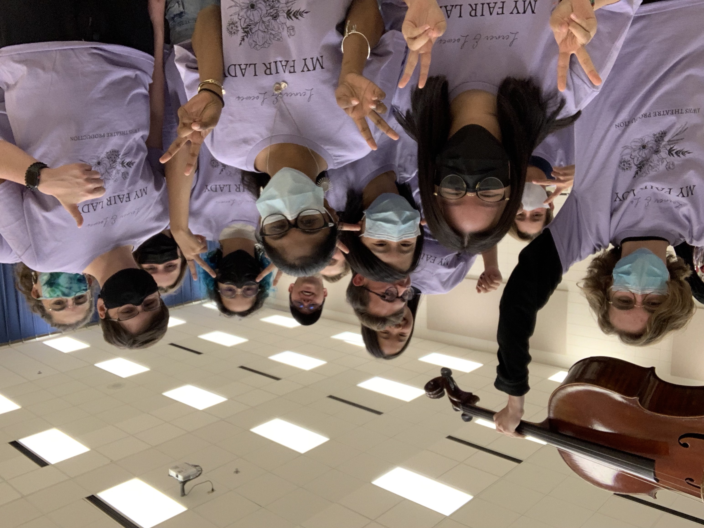
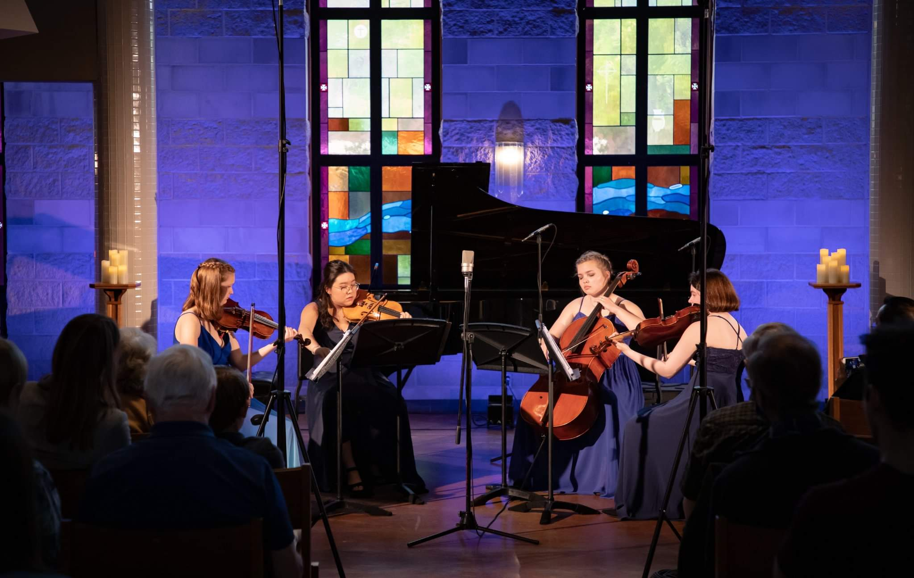

The Greater Twin Cities' Youth Symphonies (GTCYS)
This was a performance at the Taormina Ancient Theater from our Symphony orchestra's international tour of southern Italy in June 2022!
Speech

I joined the speech team this year, and it was one of the best decisions I've ever made. My category is Poetry, where I take poems and splice them together to make a 10 minute piece. Here's a picture from my first tournament!
Pit Orchestra
I've always loved musical theater, so I decided to play in the pit orchestra for my school's performance of My Fair Lady!
String Quartet
I'm a part of a chamber music program, and my ensemble is called the BRIJ quartet. This year, we got the opportunity to perform Shostakovich's 9th Quartet at ProMusica MN!